WEB
Всемирная паутина (World Wide Web) — распределённая система, предоставляющая доступ к связанным между собой документам, расположенным на различных компьютерах, подключённых к сети Интернет.
Веб-служба, веб-сервис (web service) — идентифицируемая уникальным веб-адресом (URL-адресом) программная система со стандартизированными интерфейсами, а также HTML-документ сайта, отображаемый браузером пользователя.
Internet
- Всемирная система объединённых компьютерных сетей для хранения, обработки и передачи информации.
- Сеть сетей, которая объединяет в себе компьютеры, маршрутизаторы и сервера.
- Очень большая сеть компьютеров, которые взаимодействую друг с другом.
- Интернет - это инфраструктура, а ВЭБ - это сервис, построенный на основе этой инфраструктуры.
Mobile
Native apps
- Под нативным мы подразумеваем мобильное приложение, которое создается для определенной платформы и непосредственно устанавливается на устройство пользователя (занимая определенный объем памяти).
- Такие приложения пользователь загружает через магазин приложений той или иной платформы, такой как Play Store для Google и Apple App Store для iOS.
- Органично выглядят на телефоне.
- Используют все функции программного обеспечения гаджета.
- Имеют быстрый отклик и плавность анимаций интерфейса.
- Надежнее (работают стабильнее).
- Экономнее расходуют ресурсы телефона: батарею, память.
- Дорого в разработке.
Web apps
Веб приложения работают через веб-браузер на устройстве пользователя. Эти приложения по сути являются индивидуализированными вебсайтами, которые сделаны таким образом, чтобы выглядеть и использоваться как нативные приложения, но на самом деле они не находятся на устройстве пользователя.
- Приложения на веб-основе легче поддерживаются и они могут функционировать на платформе с любой ОС.
- Разработчики могут предлагать приложения без необходимости их утверждения какими-либо магазинами приложений.
- Более быстрая разработка циклов с использованием CSS, HTML и JavaScript.
- Нет доступа к устройству пользователя.
- Пользователи должны использовать их через сеть, что значительно снижает контроль безопасности.
- Поиск приложения может быть затруднительным, так как не существует магазина приложений с каталогом и функцией поиска в нем.
Hybrid apps
Гибридные приложения являются чем-то средним между нативными и веб-приложениями.
Фактически они создаются так, чтобы выглядеть и использоваться как нативные приложения.
Их также устанавливают на телефон пользователя и их можно найти в магазинах приложений.
Различие заключается в том, что они обязательно должны размещаться в рамках нативного приложения и созданы, чтобы работать через WebView.
- Запускается не из браузера, возможно независимое обновление.
- Скорость разработки, а, следственно, и цена значительно ниже, чем нативные приложения.
- Возможность распространяться через магазины приложений (в отличие от веб-приложений).
- Скорость и стабильность работы оставляют желать лучшего.
- Сложности в масштабировании и развитии проекта.
- Сложности и нестабильность при использовании различных модулей/функций смартфона.
Браузер
Браузер
Браузер - это программа, которая позволяет искать информацию в интернете, просматривать сайты, скачивать и загружать файлы.
- Это среднее звено между пользователем и интернетом.
- Пользователь вводит в адресную строку браузера адрес сайта.
- Браузер ищет сервер по IP-адресу. Сервер - это программа.
- Сначала он ищет в кэше роутера, операционной системе или в истории подключений.
- Потом смотрит в DNS.
- Найдя нужный IP-адрес, браузер устанавливает соединение с сервером с помощью протокола TCP/IP.
- Для установки соединения используется процесс 'рукопожатие' (handshaking).
- Браузер отправляет HTTP запрос на сервер для отображения страницы.
- Запрос обрабатывается вэб-сервером.
После этого сервер отправляет браузеру ответ с данными:
- файлы cookie
- способ кэширования
- контент страницы
Браузер обрабатывает ответ и отображает запрашиваемый контент (рендеринг).
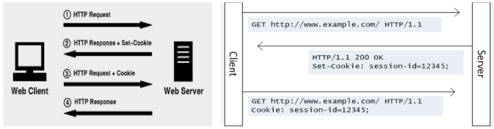
Cookie
Cookie — это маленький файл, который сервер отправляет браузеру пользователя. Браузер может хранить файлы cookie и отправлять их обратно на тот же сервер со следующими запросами. Как правило, файлы cookie HTTP используются для определения, поступают ли два запроса из одного браузера, например, чтобы пользователь оставался в системе. Это позволяет серверу идентифицировать пользователя и сохранить про него данные (язык, местонахождение, настройки).
Net
OSI
OSI и TCP/IP - уровни и типы данных: сегменты, датаграммы, пакеты, биты, кадры OSI (Open Systems Interconnection) - эталонная модель: модель взаимодействия открытых систем:
- эталонная модель организации компьютерных сетей
- юридический стандарт организации ISO
- 7 уровней организации сети и их назначение
- протоколы не включены в модель
- не используется на практике, удобна для описания компьютерных сетей
| Уровень | Единица | Оборудование |
|---|---|---|
| Прикладной | Сообщение | На хосте |
| Представления | Сообщение | На хосте |
| Сеансовый | Сообщение | На хосте |
| Транспортный | Сегмент/Дейтаграмма | На хосте |
| Сетевой | Пакет | Маршрутизатор |
| Канальный | Кадр | Коммутатор, точка доступа Wi-Fi |
| Физический | Бит | Концентратор, репитор |
Физический уровень - основная основная задача это передача потока бит по физическому каналу связи, т.е. перевод битов в сигналы и обратно по среде передачи данных:
- перепады напряжения для меди
- импульсы для оптоволокна
- электромагнитное излучение для радиосвязи
Передача потока бит по среде передачи данных:
- не вникает в смысл передаваемой информации
- единица передачи информации - бит (...01100111001...)
Скорость канала:
- Пропускная способность (бит/с) - количество передачи данных за единицу времени.
- Задержка - сколько времени пройдёт пока сообщение от отправителя дойдёт до получателя.
Количество ошибок - если возникают часто, то сетевое оборудование должно иметь инструменты их исправления, если редко, то ошибки можно исправлять на более высоких уровнях.
Типы каналов связи:
- Симплексный - передача только в одну сторону.
- Дуплексный - передача данных в обе стороны одновременно.
- Полудуплексный - передача данных в обе стороны по очереди.
Кабель - ошибки редко:
- Витая пара - скрученные для уменьшения помех медные кабели.
- Оптический кабель - тонкие световоды объединяются в один кабель.
Беспроводные технологии - ошибки часто:
- Радиоволны - GSM 900 МГц лицензируется.
- Wi-Fi 2,4 ГГц и 5 ГГц без лицензий.
- Спутниковые каналы.
| Медные провода | кодирование | прямоугольные импульсы |
| Оптоволокно, беспроводная среда | модуляция | синусоидальные волны |
Канальный уровень:
- определяет начало/конец сообщения в потоке бит
- обнаруживает и исправляет ошибки
- управляет доступом к среде передачи данных (одномоментно передаёт только один.)
- физическая адресация (МАС)
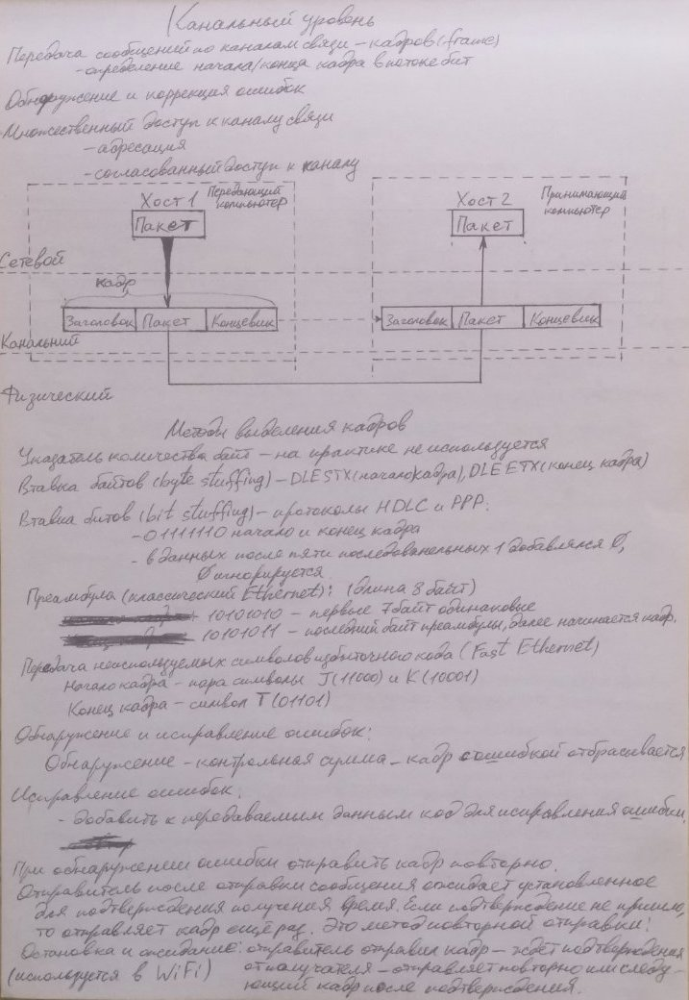
Сетевой уровень:
- создание составной сети и согласование различий в сетях
- адресация (сетевые и глобальные адреса)
- определение маршрута пересылки пакетов в составной сети (маршрутизация)
Транспортный уровень:
- передача данных между процессами на хостах
- управляет надёжностью (защищённый от ошибок канал с гарантированным порядком следования сообщений)
- сквозной уровень от отправителя к получателю
Сеансовый уровень:
- создаёт сеансы связи
- управляет диалогом (очерёдностью передачи сообщений)
- управляет маркерами (не допускает одновременно выполнять критические операции)
- синхронизация (метки в сообщениях для возобновления передачи в случае сбоя связи)
- на практике сеансовый уровень в сетях не используется
Уровень представления:
- согласование форматов представления символов и чисел
- шифрование и дешифрование
Прикладной уровень - приложения:
- web-страницы
- соц.сети
- видео и аудио связь
- почта
- доступ к файлам и т.д.
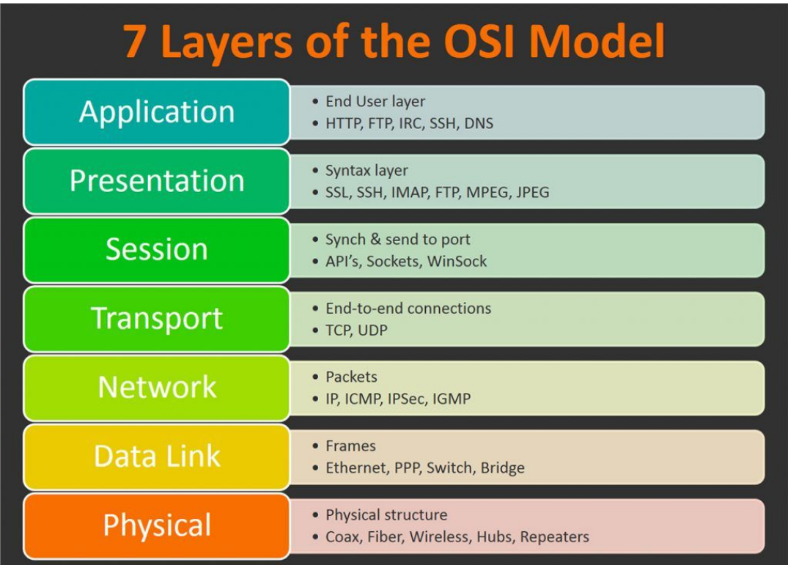
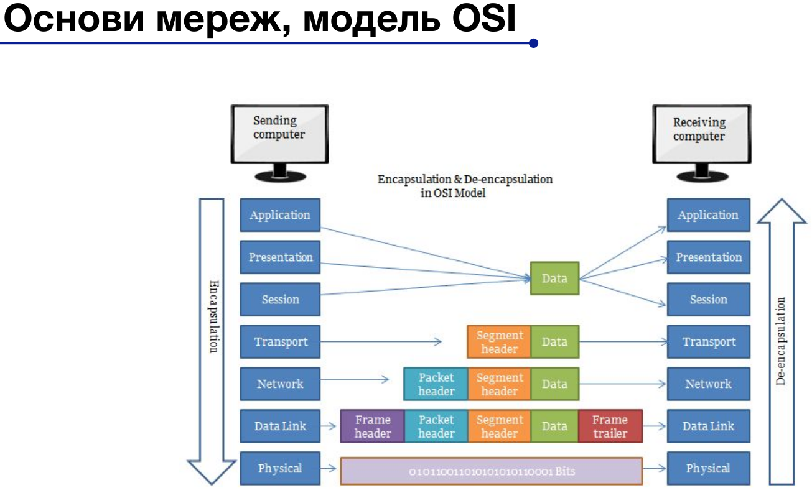
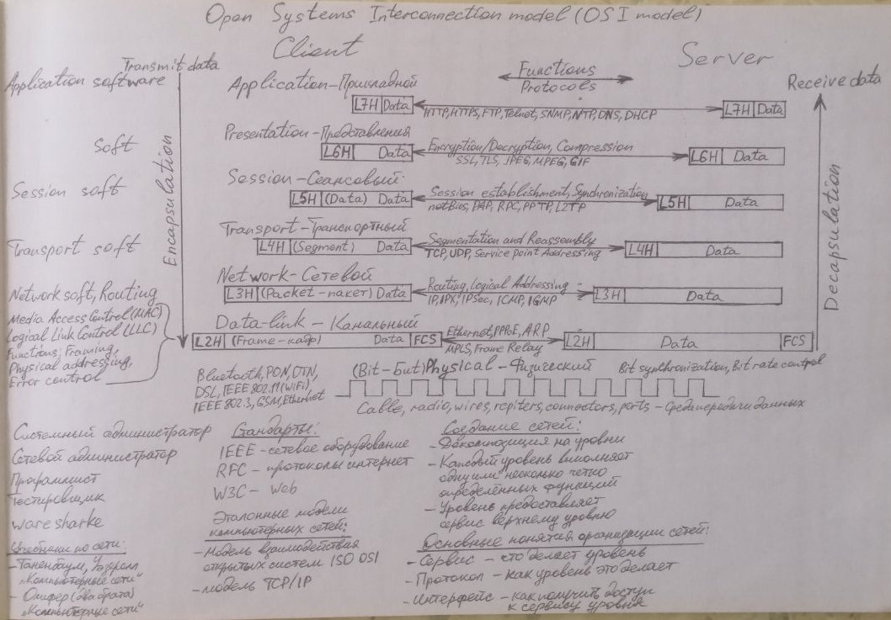
TCP/IP
TCP/IP - модель протокола, произошло от TCP и IP.
| TCP/IP | Протоколы в заголовках сообщений | Задачи |
|---|---|---|
| Application | HTTP (передача данных в формате HTML) | Показ пользователю, кодирование, шифрование, управление сеансами |
| Transport | TCP (порт приложения, контроль доставки) | Установка соединения между устройствами в разных сетях |
| Internet | IP (нахождение устройства по ip-адресу) | Межсетевой маршрут от отправителя к получателю |
| Network access: Ethernet | MAC (общение между сетевыми картами в одной сети) | Управление устройствами внутри сети |
Набор правил, который позволяет обрабатывать сквозную передачу данных.
Сюда входит:
- формирование пакетов
- способ их отправки
- получения
- маршрутизации
- распаковки для передачи программному обеспечению
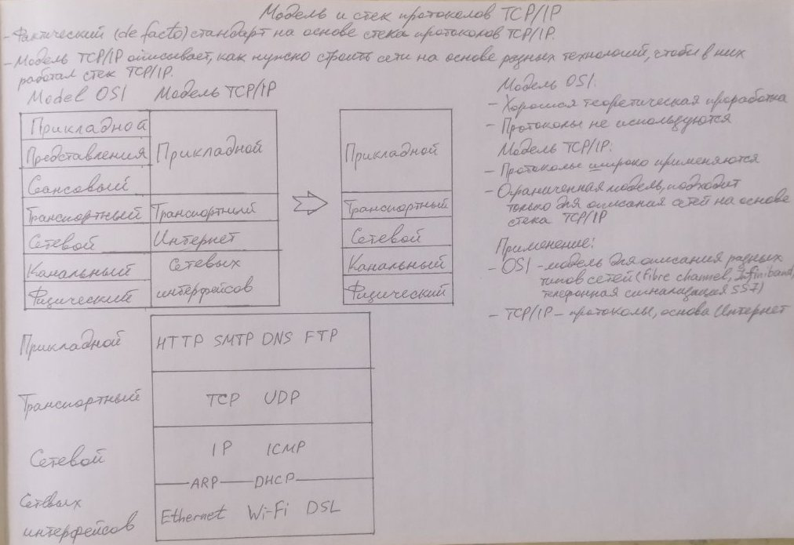
TCP (Transmission Control Protocol) - протокол управления передачей.
Обмен данными, ориентированный на соединения, может использовать надежную связь, для обеспечения которой протокол уровня 4 (транспортный) посылает подтверждения о полученных данных и запрашивает повторную передачу, если данные не получены или искажены.
Пакеты в TCP называются сегментами.
TCP используется в прикладных протоколах HTTP, FTP, SMTP, Telnet.
Перед отправкой сообщения по протоколу TCP соединение должно быть открыто.
Механизм TCP предоставляет поток данных с предварительной установкой соединения, осуществляет повторный запрос данных в случае потери данных и устраняет дублирование при получении двух копий одного пакета.
Процесс начала сеанса TCP (также называемый «*рукопожатие*» (handshake)), состоит из трёх шагов.
Клиент, который намеревается установить соединение, посылает серверу сегмент с номером последовательности и флагом SYN.
- Сервер получает сегмент, запоминает номер последовательности и пытается создать сокет (буфера и управляющие структуры памяти) для обслуживания нового клиента.
- В случае успеха сервер посылает клиенту сегмент с номером последовательности и флагами SYN и ACK, и переходит в состояние SYN-RECEIVED.
- В случае неудачи сервер посылает клиенту сегмент с флагом RST.
Если клиент получает сегмент с флагом SYN, то он запоминает номер последовательности и посылает сегмент с флагом ACK.
- Если клиент одновременно получает и флаг ACK (что обычно и происходит), то он переходит в состояние ESTABLISHED.
- Если клиент получает сегмент с флагом RST, то он прекращает попытки соединиться.
- Если клиент не получает ответа в течение 10 секунд, то он повторяет процесс соединения заново.
Если сервер в состоянии SYN-RECEIVED получает сегмент с флагом ACK, то он переходит в состояние ESTABLISHED.
В противном случае после тайм-аута он закрывает сокет и переходит в состояние CLOSED.
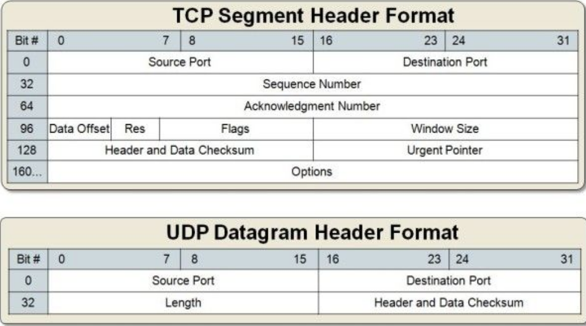
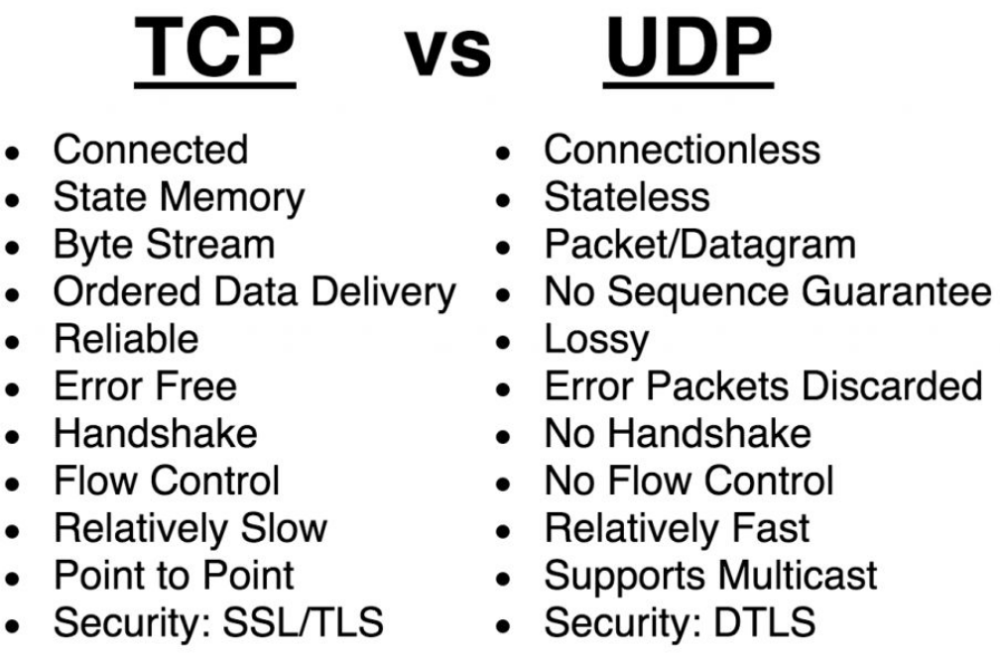
UDP - User Datagram Protocol. В отличии от TCP, UDP - очень быстрый протокол поскольку в нём определён самый минимальный механизм необходимый для передачи данных.
Сообщения поступают в любом порядке и то, которое отправлено первым, может быть получено последним.
Доставка сообщений UDP вовсе не гарантируется, сообщение может потеряться и могут быть получены две копии одного и того же сообщения.
Такой случай возникает если для отправки сообщений в один адрес использовать два разных маршрута.
UDP не требует открывать соединение и данные могут быть отправлены сразу же как только они подготовлены.
UDP не отправляет подтверждающие сообщения, поэтому данные могут быть потеряны.
URI
- URI (Uniform Resource Indicator) - унифицированный идентификатор ресурса: включает в себя URL, URN и другие способы указания ресурса.
- URI данных - это не URL или URN, содержит данные, например: data:Hello%20World.
- URL (Uniform Resource Locator) — унифицированный указатель ресурса) - адрес, который выдан уникальному ресурсу в интернете. Такими ресурсами могут быть html-страница, css-файл, изображение и т.д.
- URN (Uniform Resource Name) - унифицированное имя ресурса: является уникальным именем объекта и включает в себя название пространства имен и идентификатора в этом пространстве.
- URC (Uniform Resource Characteristic) - единая характеристика ресурса: содержит метаинформацию о ресурсе / описание ресурса, например: view-source: http://example.com/
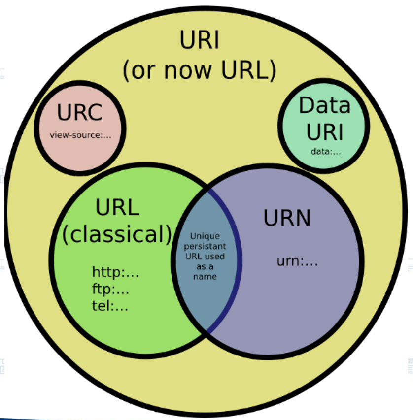
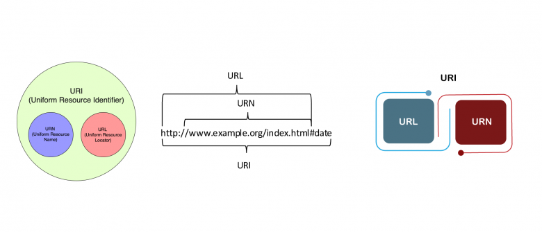
| Имя | Описание | Пример |
|---|---|---|
| XRI | Обобщенный URI для унификации многообразия идентификаторов | xri://broadview.library.example.com/(urn:isbn:0-395-36341-1) |
| IRI | URI с локализацией для удобства использования в не англоговорящих странах | http://ru.wikipedia.org/wiki/Кириллица |
| URI | Единый идентификатор ресурса | mailto:John.Doe@example.com |
| URL | Единый локатор ресурса. Указывает на место, где ресурс расположен | file://C:\UserName.HostName\Projects\Wikipedia_Articles\URI.xml |
| URN | Единое имя ресурса. Независимо от его расположения | urn:isbn:0451450523 |
| URC | Единая характеристика ресурса. Содержит метаинформацию о ресурсе / описание ресурса | URN:IANA:626:oit:cs:ftp-and-telnet; URL:http://www.gatech.edu/oit/cs/ftp-and-telnet.html; |
| PURL | Постоянный URL. Защищает от перемещения ресурса (404) | http://purl.russian-books.com/WarAndPeace/chapter12.html |
| PRURL | URL, способный определить схему по контексту использования | //domain.com/img/logo.png |
| CURIE | Compact URI. Сокращенное представление URI | [isbn:0393315703] |
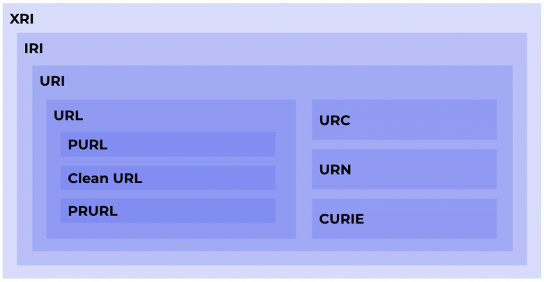
ISP
ISP (internet service provider) — поставщик интернет-услуги (иногда просто провайдер) — организация, предоставляющая услуги доступа к сети Интернет и иные связанные с Интернетом услуги.
Хостинг (hosting) — услуга по предоставлению ресурсов для размещения информации на сервере, постоянно находящемся в сети (обычно Интернет).
Это комбинация программных и аппаратных технологий, позволяющая разместить в интернете сайт, приложение, базу данных и их составные компоненты, требующие постоянного нахождения в онлайне.
- Два основных термина: хостинг-сервер и хостинг-провайдер.
- Сервер - компьютер, на котором хранятся файлы сайта или приложения. Работает 24/7.
- Хостинг-провайдер - компания, обслуживающая сервер и создающая ПО для него.
- Процессор, оперативная память и дисковое пространство сервера передаются клиенту в пользование за плату.
DNS
Домен (доменное имя) – это псевдоним для IP-адреса понятный для человека, состоящий из набора символов и цифр.
- Каждое доменное имя в Интернете является уникальным.
- Максимальная длина доменного имени (между точками) – 63 символа.
- Общая длина имени, включая поддомены, разделительные точки и имя зоны домена, может составлять до 255 знаков.
DNS (Domain Name System) — система доменных имён: компьютерная распределённая система для получения информации о доменах.
- Чаще всего используется для получения IP-адреса по имени хоста (компьютера или устройства).
- Когда пользователь вводит доменное имя в браузере, браузер отправляет DNS - запрос на DNS-сервер для преобразования доменного имени в IP-адрес.
- DNS-сервер прослушивает порт 53.
- DNS - это распределённая база данных, которая сопоставляет доменные имена с IP-адресами.
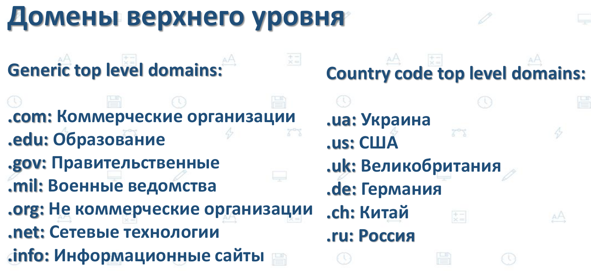
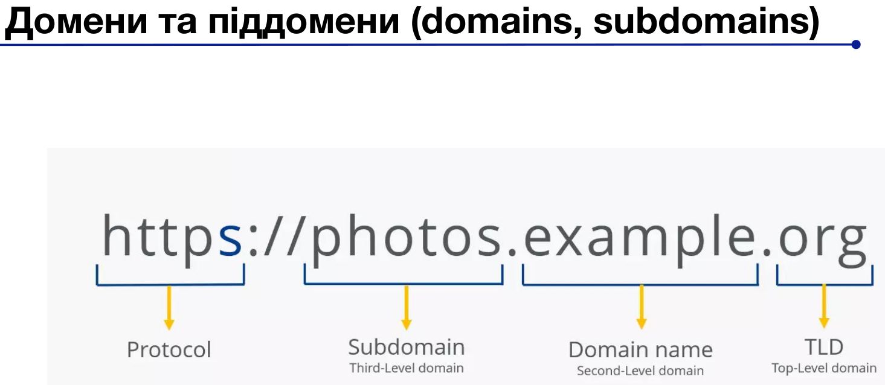
Система адресов интернета имеет иерархическую структуру:
- домены уровня страны (.us)
- домены верхнего уровня (.com)
- поддомены
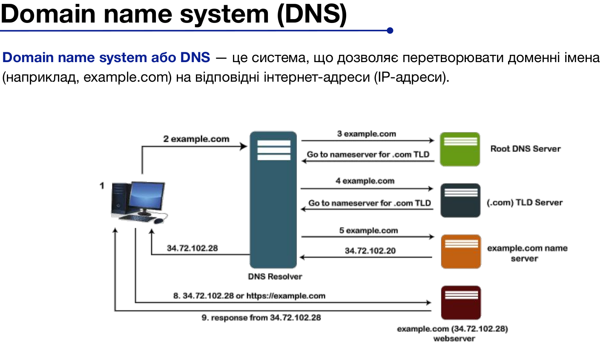
Protocol
Протокол — документ, фиксирующий какое-либо событие, факт или договоренность. Веб-протокол, также известный как протокол передачи данных - это набор правил, который описывает последовательность взаимодействия двух и более устройств, подключённых к одной сети.
Протоколы:
- IPv4, IPv6
- ICMP, ICMPv6
- DHCP, DHCPv6
- TCP, UDP
- HTTP, HTTPS
- SSH, Ethernet
- ARP, PPP
- FTP, SFTP
- SMTP, POP3
| Формат сообщения | зависит от типа сообщения и канала передачи |
| Розмер сообщения | зависит от канала передачи |
| Синхронизация | определяет в какой очередности и с какой скоростью узлы будут отправлять сообщения |
| Инкапсуляция | добавление к фрагменту сообщения заголовка с данными об отправиле и получете |
| Шаблон сообщения | требуется ли подтверждение о получении сообщения перед отправкой следующего или нет |
| Кодирование | биты кодируются отправителем в виде световых, электрических или электромагнитных импульсов, взависимости от среды передачи сигнала. Получатель эти импульсы декодирует в биты. |


Ethernet
После преамбулы все компьютеры в сети начинают записывать передаваемый кадр в свой буфер. Первые 6 байт кадра содержат адрес получателя:
- компьютер, который узнал свой адрес, продолжает записывать кадр
- остальные удаляют кадр из буфера
Для диагностики сети удобно использовать Promiscuous mode (неразборчивый режим работы сетевого адаптера) - адаптер принимает все кадры в сети, не зависимо от МАС-адреса получателя.
Недостатки классического Ethernet:
Плохая масштабируемость:
- сеть становиться неработоспособной при загрузки разделяемой среды больше чем на 30%
- работоспособное количество компьютеров - 30
Низкая безопасность - данные в разделяемой среде доступны всем.
Разное время доставки кадра:
- причина - коллизии
- плохо для трафика реального времени (аудиозвонок, видеоконференция)
В распределяемой среде возможны коллизии.
В коммутируемом Ethernet соединение Точка-Точка без разделяемой среды.
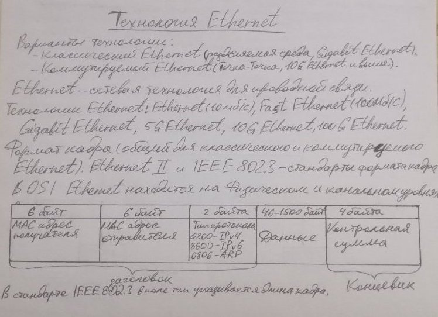
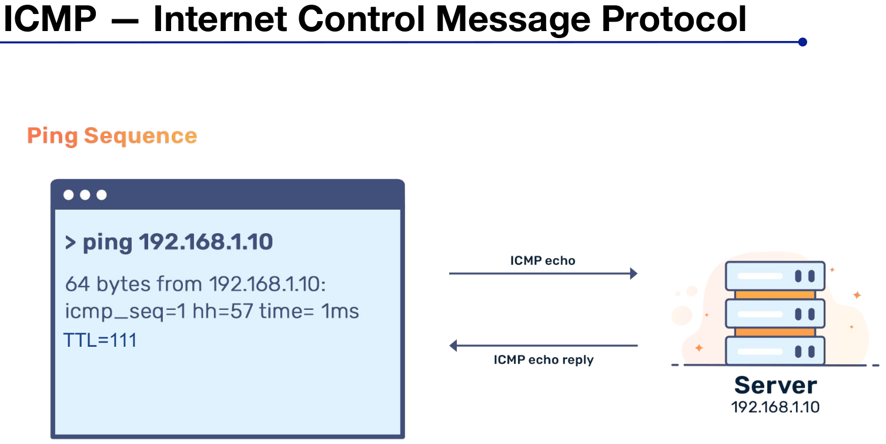
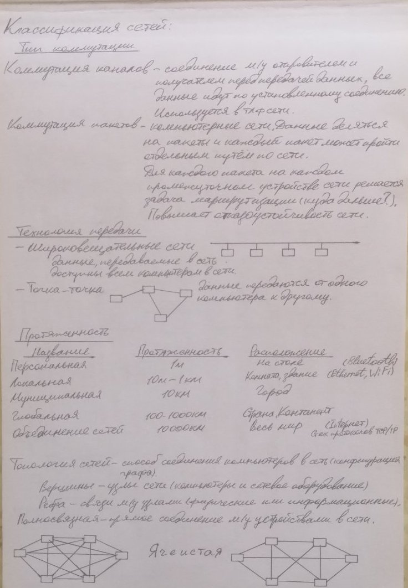
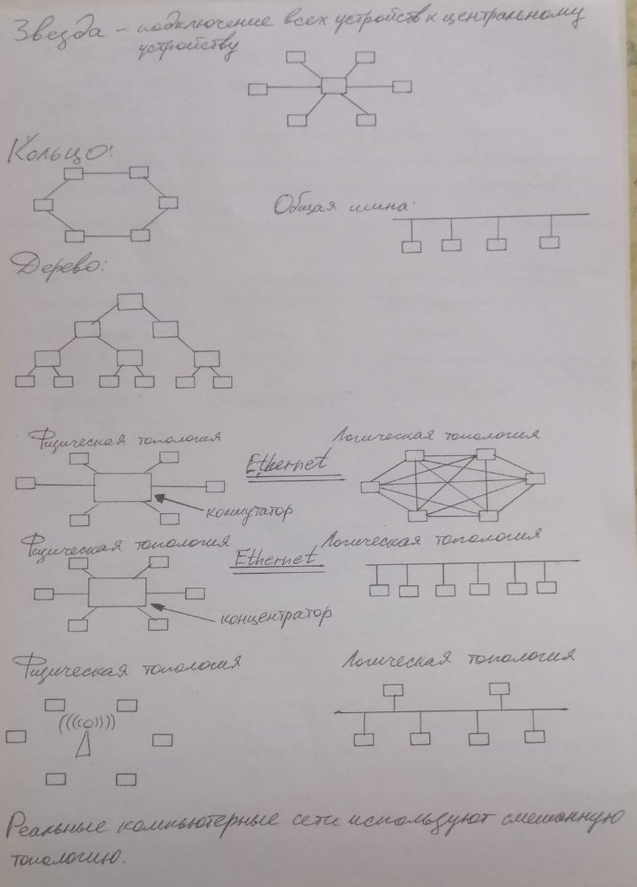
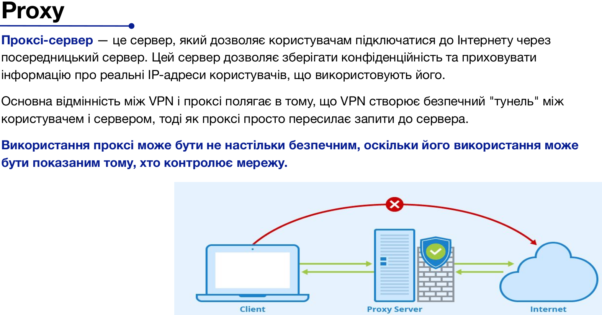
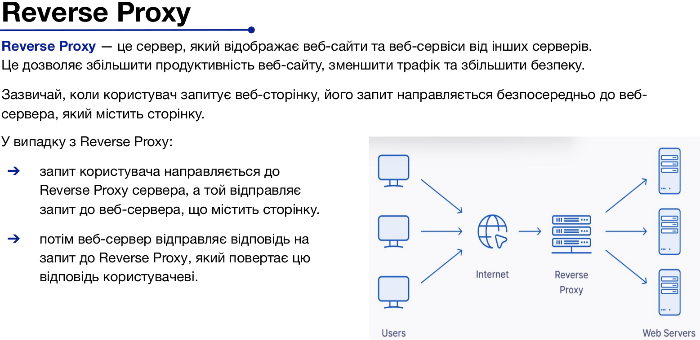
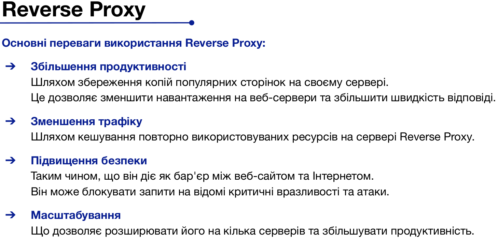
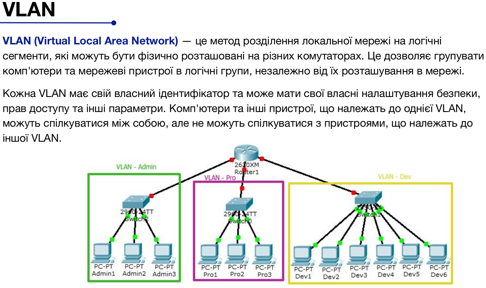
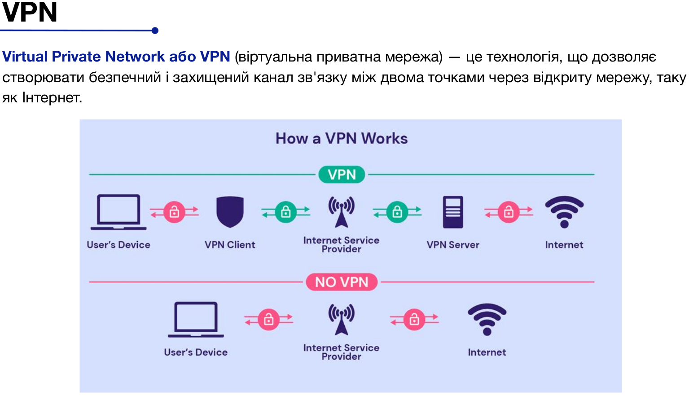
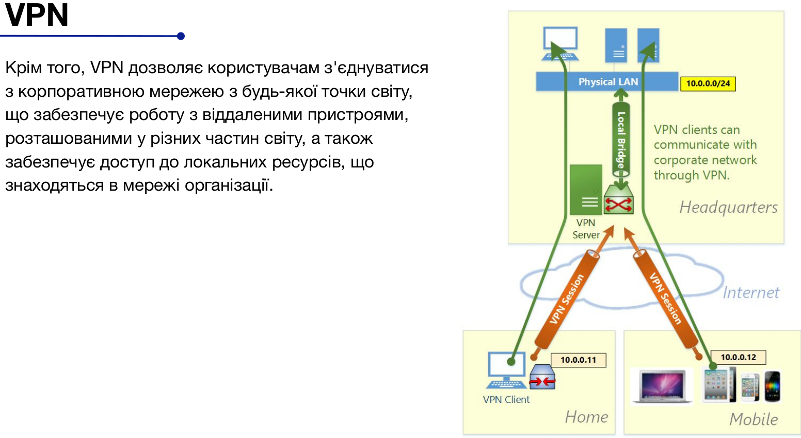
IP & Port
Internet Protocol (IP, досл. «межсетевой протокол») - маршрутизируемый протокол сетевого уровня стека TCP/IP.
Именно IP стал тем протоколом, который объединил отдельные компьютерные сети во всемирную сеть Интернет.
Неотъемлемой частью протокола является адресация сети - IP-адрес.
IP-адрес — уникальный сетевой адрес узла в компьютерной сети, построенной на основе стека протоколов TCP/IP.
В сети Интернет требуется глобальная уникальность адреса, в случае работы в локальной сети требуется уникальность адреса в пределах сети.
Чтобы обратиться к какому-то компьютеру, каждый компьютер, подключенный к сети, имеет свой уникальный адрес - IP-адрес.
Каждый компьютер, подключенный к интернету, может быть доступен через публичный IP-адрес, который состоит из 32 бит для IPv4 (такие адреса обычно записываются в виде четырёх чисел от 0 до 255, разделённых точками: 173.194.121.32) или 128 бит для IPv6 (обычно записываются в виде 8 групп по 4 шестнадцатеричных числа, разделённых двоеточиями: 2027:0da8:8b73:0000:0000:8a2e:0370:1337).
ICANN (Internet Corporation for Assigned Names and Numbers) - Корпорация по управлению доменными именами и IP-адресами.
Service Name and Transport Protocol Port Number Registry
Сокет - комбинация исходного IP-адреса и номера порта источника, или IP-адреса и номера порта назначения.
- 192.168.1.5:1099 - сокет источника
- 192.168.1.7:80 - сокет веб сервера
Netstat – это сетевая утилита, которая может использоваться для проверки соединений.
Параметр -n - отображение IP-адресов и номеров портов в числовом виде.
Порты назначаются и управляются организацией, известной как ICANN.
Порты делятся на три категории и имеют число от 1 до 65535:
- Хорошо известные порты – порты назначения, связанные с общими сетевыми программами, идентифицируются как хорошо известные порты. Эти порты находятся в диапазоне от 1 до 1023.
- Зарегистрированные порты – порты от 1024 до 49151 можно использовать в качестве портов источника или назначения. Они могут быть использованы организациями для регистрации конкретных приложений, таких как программы чата.
- Частные порты – порты от 49 152 до 65 535, которые часто используются как порты источника.<br />Эти порты могут использоваться любыми приложениями.
| ipconfig | информация про IP-конфигурацию |
| ping | проверка соединения с другими IP-хостами |
| netstat | просмотр сетевых соединений |
| tracert | просмотр маршрута до места назначения |
| nslookup | информация про домен |
- Команда ipconfig /all предназначена для просмотра расширенной информации, включая MAC-адреса, IP-адреса шлюза по умолчанию и DNS-серверы.
- Также указывается, включен ли протокол DHCP и выводятся данные адреса DHCP-сервера и информация об аренде.
- Если используется динамическое назначение IP-адресов, команда ipconfig /release удаляет существующие привязки адресов DHCP.
- Команда ipconfig /renew запрашивает текущую конфигурацию с DHCP-сервера. Хост может содержать ошибочную или устаревшую информацию о конфигурации IP, и простое обновление этой информации – это все, что нужно для восстановления соединения.
HTTP
HyperText Transfer Protocol (HTTP) — протокол передачи гипертекста: протокол прикладного уровня передачи данных.
Изначально — в виде гипертекстовых документов в формате HTML (документов, которые содержат ссылки, позволяющие переходить к другим документам).
В настоящий момент используется для передачи произвольных данных).
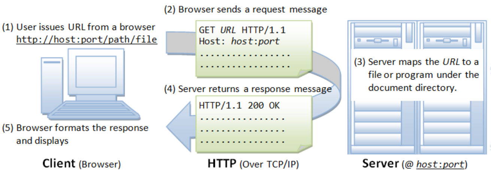
Основой HTTP является технология «клиент-сервер», то есть предполагается существование потребителей (клиентов), которые инициируют соединение и посылают запрос, и поставщиков (серверов), которые ожидают соединения для получения запроса, производят необходимые действия и возвращают обратно сообщение с результатом.
- Обычно с помощью протокола HTTP осуществляется обмен данными между вэб-браузером и вэб-сервером.
- Благодаря протоколу HTTP обеспечивается работа всемирной паутины.
- Также HTTP часто используется как протокол передачи информации для других протоколов прикладного уровня, таких как: SOAP, XML-RPC, WebDAV.
- В таком случае говорят, что протокол HTTP используется как транспорт.
- API многих программных продуктов использую HTTP для передачи данных - сами данные при этом могут иметь любой формат: XML или JSON.
- Как правило передача данных по протоколу HTTP осуществляется через TCP/IP-соединения.
- Серверное ПО при этом обычно использует TCP-порт 80, хотя может использовать и любой другой.
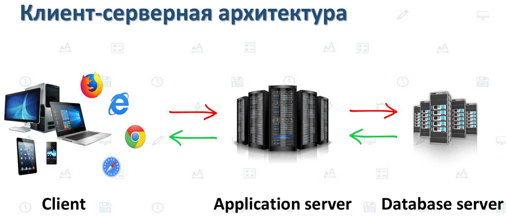
HTTP-structure: каждое HTTP-сообщение состоит из трёх частей: Starting line, HTTP Headers, Message body.
Starting line (Стартовая строка) — определяет тип сообщения.
Стартовая строка запроса: Method - URI - Version.
- Method - метод запроса.
- URI - путь к запрашиваемому документу.
- Version - версия протокола, пара разделенных точкой цифр. Например: 1.0
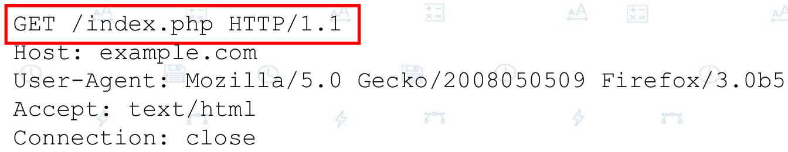
Стартовая строка ответа: Version - Status Code - Reason Phrase.
- Version - версия протокола, пара разделенных точкой цифр. Например: 1.0
- Код состояния (Status Code) — три цифры.
- Код состояния является частью первой строки ответа сервера.
- Он представляет собой целое число из трёх цифр.
- Первая цифра указывает на класс состояния.
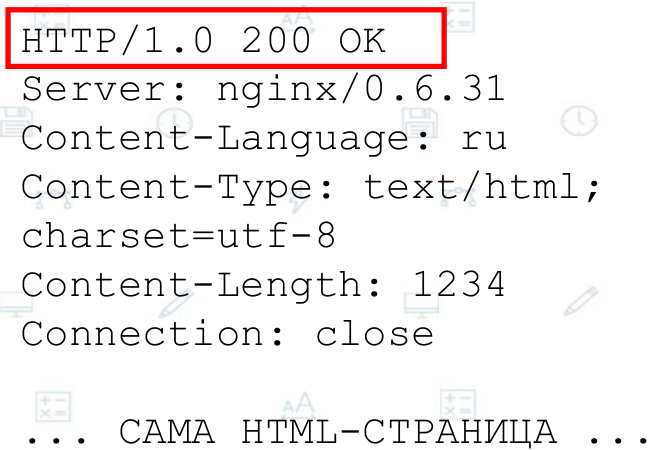
Код состояния является частью первой строки ответа сервера.
Он представляет собой целое число из трёх цифр.
Первая цифра указывает на класс состояния.
За кодом ответа обычно следует отделённая пробелом поясняющая фраза на английском языке, которая разъясняет человеку причину именно такого ответа
HTTP-status:
- Informational responses (100 – 199).
- 1xx - Информационный: информирование о процессе передачи.
- В HTTP/1.0 — сообщения с такими кодами должны игнорироваться.
- В HTTP/1.1 — клиент должен быть готов принять этот класс сообщений как обычный ответ, но ничего отправлять серверу не нужно.
- Сами сообщения от сервера содержат только стартовую строку ответа и, если требуется, несколько специфичных для ответа полей заголовка.
- Прокси-серверы подобные сообщения должны отправлять дальше от сервера к клиенту.
- Successful responses (200 – 299).
- 2xx - Успех: информирование о случаях успешного принятия и обработки запроса клиента.
- В зависимости от статуса, сервер может ещё передать заголовки и тело сообщения.
- Redirection messages (300 – 399).
- 3xx - Перенаправление: сообщает клиенту, что для успешного выполнения операции необходимо сделать другой запрос (как правило по другому URI).
- Из данного класса пять кодов 301, 302, 303, 305 и 307 относятся непосредственно к перенаправлениям (редирект).
- Адрес, по которому клиенту следует произвести запрос, сервер указывает в заголовке Location. Допускается использование фрагментов в целевом URI.
- Client error responses (400 – 499).
- 4xx - Ошибка клиента: указание ошибок со стороны клиента.
- При использовании всех методов, кроме HEAD, сервер должен вернуть в теле сообщения гипертекстовое пояснение для пользователя.
- Server error responses (500 – 599).
- 5xx - Ошибка сервера: информирование о случаях неудачного выполнения операции по вине сервера.
- Для всех ситуаций, кроме использования метода HEAD, сервер должен включать в тело сообщения объяснение, которое клиент отобразит пользователю.
По коду состояния определяется дальнейшее содержимое сообщения и поведение клиента.
Пояснение (Reason Phrase) — отделённая пробелом поясняющая фраза к коду ответа для пользователя. Никак не влияет на сообщение и является необязательным.
Тип HTTP-запроса (также называемый HTTP-метод) указывает серверу на то, какое действие мы хотим произвести с ресурсом.
HTTP-method:
- OPTIONS - Используется для определения возможностей веб-сервера или параметров соединения для конкретного ресурса.
- GET - Используется для запроса содержимого указанного ресурса. С помощью метода GET можно также начать какой-либо процесс.
- HEAD - Аналогичен методу GET, за исключением того, что в ответе сервера отсутствует тело.<br />Запрос HEAD обычно применяется для извлечения метаданных, проверки наличия ресурса (валидация URL) и чтобы узнать, не изменился ли он с момента последнего обращения.
- POST - Применяется для передачи пользовательских данных заданному ресурсу.<br />Например, в блогах посетители обычно могут вводить свои комментарии к записям в HTML-форму, после чего они передаются серверу методом POST и он помещает их на страницу. При этом передаваемые данные (в примере с блогами — текст комментария) включаются в тело запроса.
- PUT - Применяется для загрузки содержимого запроса на указанный в запросе URI.<br />Если по заданному URI не существует ресурс, то сервер создаёт его и возвращает статус 201 (Created).<br />Если же был изменён ресурс, то сервер возвращает 200 (Ok) или 204 (No Content).
- PATCH - Аналогично PUT, но применяется только к фрагменту ресурса.
- DELETE - Удаляет указанный ресурс.
- TRACE - Возвращает полученный запрос так, что клиент может увидеть, какую информацию промежуточные серверы добавляют или изменяют в запросе.
- CONNECT - Преобразует соединение запроса в прозрачный TCP/IP-туннель, обычно чтобы содействовать установлению защищённого SSL-соединения через нешифрованный прокси.


HTTP Headers:
- Заголовки HTTP (англ. HTTP Headers) — это строки в HTTP-сообщении, содержащие разделённую двоеточием пару параметр-значение.
- Формат заголовков соответствует общему формату заголовков текстовых сетевых сообщений ARPA (см. RFC 822).
- Заголовки должны отделяться от тела сообщения хотя бы одной пустой строкой.


Message body: тело HTTP-сообщения (message-body), если оно присутствует, используется для передачи тела объекта, связанного с запросом или ответом.
HTTPS (Hypertext Transfer Protocol Secure) — защищённая версия HTTP.
Использует SSL-протокол, который активируется после установки SSL-сертификата и зашифровывает личную информацию, перед тем как передать её владельцу сайта.
В основе любого метода шифрования лежит ключ. Ключи шифрования HTTPS.
Ключ — это способ зашифровать или расшифровать сообщение.
В работе SSL-сертификата участвуют три ключа: публичный, приватный и сеансовый.
Сниферы, понятие, виды и опыт работы, перехватить пакет и проанализировать трафик:
Api
API (Application programming interface)
- это набор функций, который группируется разработчиком по функционалу, по заказчику, по смыслу операций и т.д.
- это контракт, который предоставляется программой: Ко мне можно обращаться так, я сделаю это
- это интерфейс или правила связи между клиентом и сервером, предназначенный для упрощения создания программного обеспечения на стороне клиента
- это абстракция, которая описывает функциональность, без описания того, как реализована эта функциональность
- RPC - запрос на выполнение функции на сервере по имени функции с входными параметрами.
- REST - запрос с помощью установленных методов к ресурсу (сущности) на сервере.
- SOAP - формальный корпоративный подход, работает поверх любого протокола связи, даже асинхронно.
Наиболее распространенные связки
- JSON + REST + HTTP
- XML + RPC + SOAP
Преимущества
- API основанные на RPC прекрасно работают для действий (выполнения процедур или команд).
- API основанные на REST хороши для моделирования сущностей и применения CRUD (create, read, update, delete) для данных.
- REST vs SOAP - Простота VS Стандарты.
- JSON более компактный и не требует тегов закрытия как в XML.
- XML не может использовать массивы, как JSON.
RPC (Remote Procedure Call)
Удаленный вызов процедур — класс технологий, позволяющих компьютерным программам вызывать функции или процедуры в другом адресном пространстве (как правило, на удалённых компьютерах).
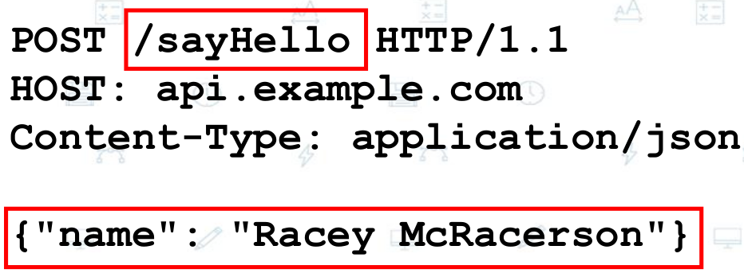
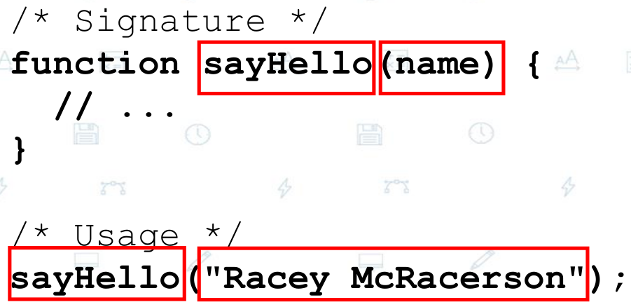
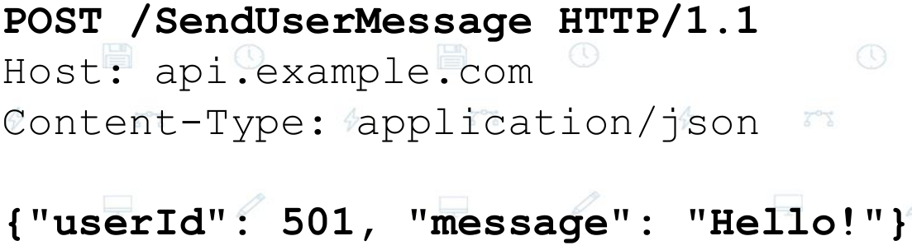
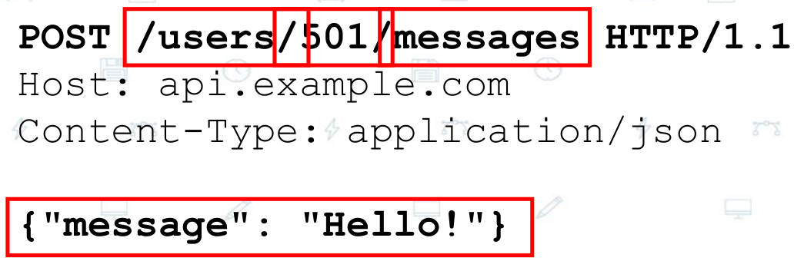
REST (Representational State Transfer)
Передача состояния представления — это архитектурный стиль взаимодействия компонентов распределённого приложения в сети, который имеет набор ограничений, для проектирования по модели клиент-сервер.
Особенности архитектурного стиля:
- Каждая сущность должна иметь уникальный идентификатор – URI.
- Сущности должны быть связаны между собой.
- Для чтения и изменения данных должны использоваться стандартные методы.
- Должна быть поддержка нескольких типов ресурсов.
- Взаимодействие должно осуществляться без состояния.
Каждая единица информации однозначно определяется URL – это значит, что URL по сути является первичным ключом для единицы данных.
Т.е. например третья книга с книжной полки будет иметь вид /book/3, а 35-я страница в этой книге — /book/3/page/35.
Запросы:
Get: /test/demo_form.php?name1=value1&name2=value2
- параметры передаются в строке браузера
- может быть закеширован
- остаётся в истории браузера
- может быть сохранён в избранном
- нельзя передавать конфиденциальные данные
- максимальная длина в адресной строке 1024 символа
- используется только для получения данных
POST:
POST /test/demo_from.php HTTP/1.1
HOST: w3schools.com
name1=value1&name2=value2- параметры передаются в теле запроса
- не может быть закеширован, сохранён в истории или в избранном
- не имеет ограничения на длину запроса
- можно передавать файлы
CRUD в REST:
- GET /book/ — получить список всех книг
- GET /book/3/ — получить книгу номер 3
- POST /book/ — добавить книгу (данные в теле запроса)
- PUT /book/3 – изменить книгу (данные в теле запроса)
- DELETE /book/3 – удалить книгу
Или:
- GET /book/ — получить список всех книг
- GET /book/3/ — получить книгу номер 3
- POST /book/ — добавить книгу (данные в теле запроса)
- POST /book/3 — изменить книгу (данные в теле запроса)
- POST /book/3 — удалить книгу (тело запроса пустое)
SOAP
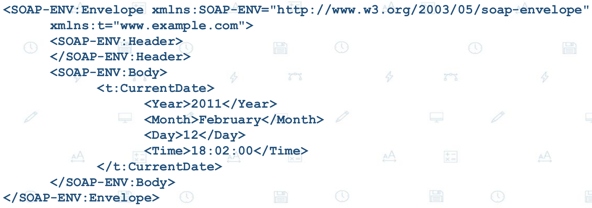
SOAP — протокол обмена структурированными сообщениями в распределённой вычислительной среде.
Первоначально SOAP предназначался, в основном, для реализации удалённого вызова процедур (RPC).
Сейчас протокол используется для обмена произвольными сообщениями в формате XML, а не только для вызова процедур.
SOAP-сообщение представляет собой XML-документ, сообщение состоит из трех основных элементов:
SOAP Envelope - конверт.
Является самым «верхним» элементом SOAP сообщения.
Содержит корневой элемент XML-документа.
Описывается с помощью элемента Envelope с обязательным пространством имен:
SOAP Header - заголовок.
Первый прямой дочерний элемент конверта. Необязательный.
Заголовок кроме атрибутов xmlns может содержать 0 или более стандартных атрибутов:
- encodingStyle
- actor (или role для версии 1.2)
- mustUnderstand
- relay
SOAP Body - тело:
- Элемент Body обязательно записывается сразу за элементом Header, если он есть в сообщении, или первым в SOAP-сообщении, если заголовок отсутствует.
- В элемент Body можно вложить произвольные элементы, спецификация никак не определяет их структуру.
- Определен только один стандартный элемент, который может быть в теле сообщения - Fault, содержащий сообщение об ошибке.
- Если SOAP-сервер, обрабатывая поступившее SOAP-сообщение, обнаружит ошибку, то он прекратит обработку и отправит клиенту SOAP-сообщение, содержащее один элемент Fault с сообщением об ошибке.
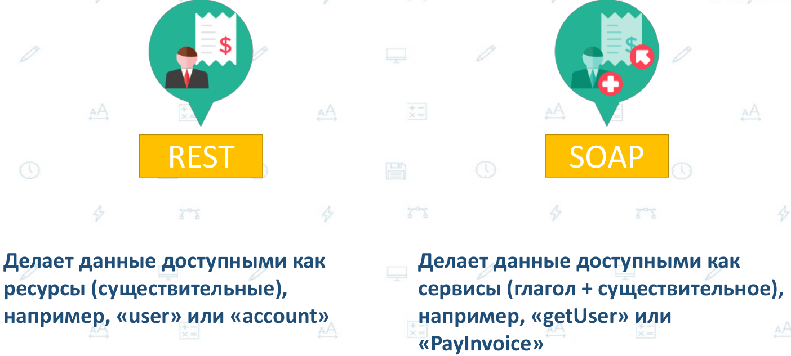
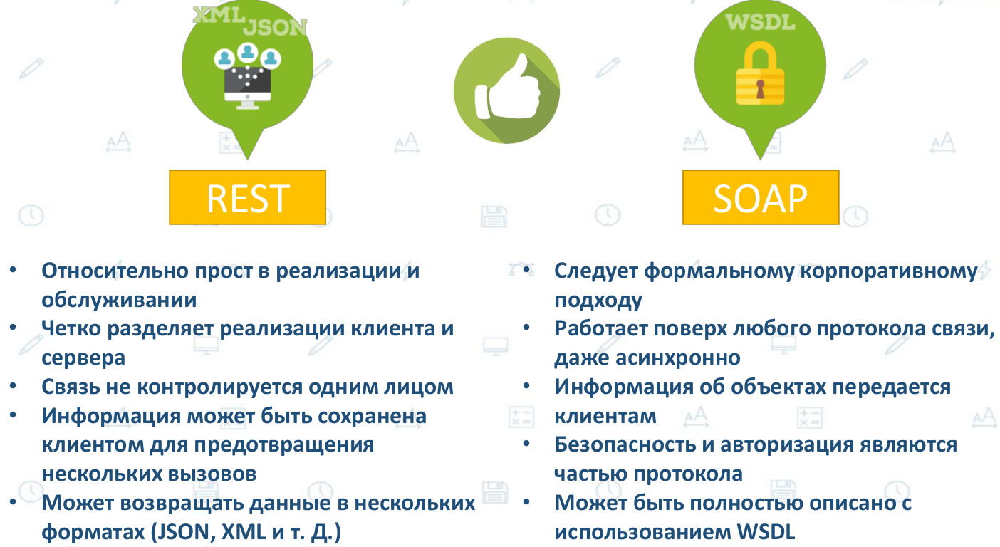
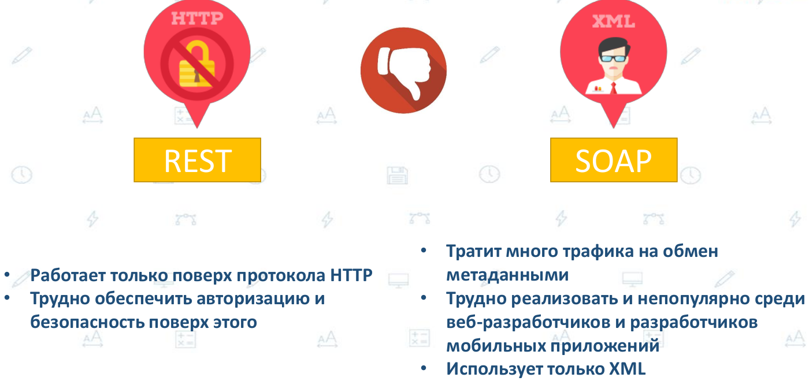
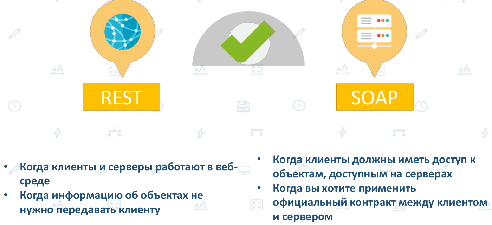
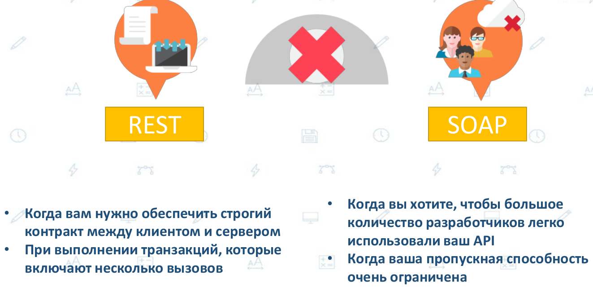
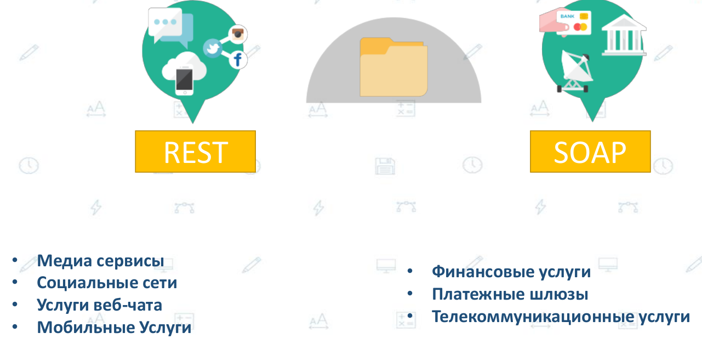
Форматы JSON / XML / WSDL
WSDL (Web Services Definition Language) - Язык описания веб-сервисов, основан на языке XML.
Каждый документ WSDL можно разбить на следующие логические части:
- types: определение типов данных — определение вида отправляемых и получаемых сервисом XML сообщений
- message: элементы данных — сообщения, используемые web-сервисом
- portType: абстрактные операции — список операций, которые могут быть выполнены с сообщениями
- binding: связывание сервисов — способ, которым сообщение будет доставлено
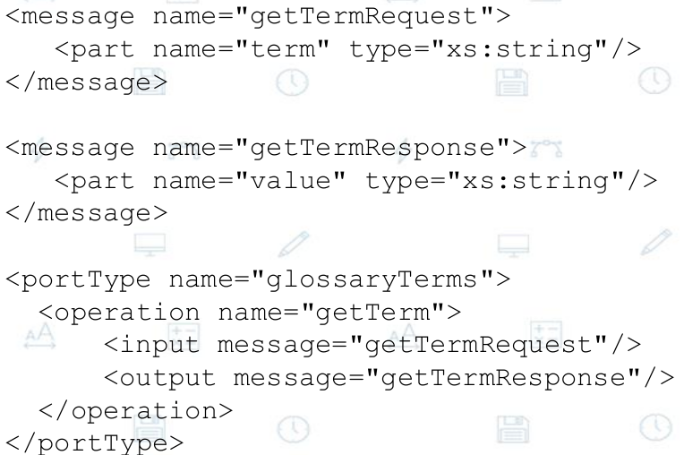
XML (Extensible Markup Language]* - Расширяемый Язык Разметки.
- Корневой элемент и пространство имен.
- Разработчик сам определяет используемые теги.
- Не может содержать массивы.
- Основная цель XML - это передача данных между разными системами.
- Документ должен соответствовать семантическим правилам языка (схеме XML, WSDL или DTD *[Document Type Definition]*.
- XML обычно используют для описания чего-то.
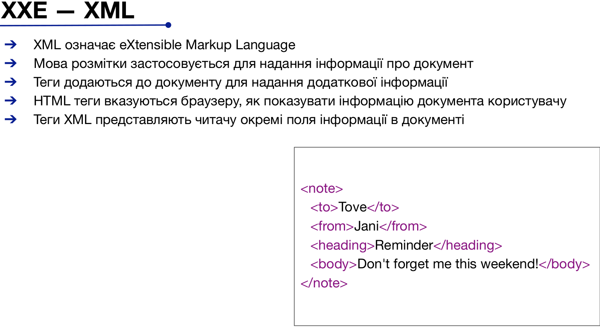
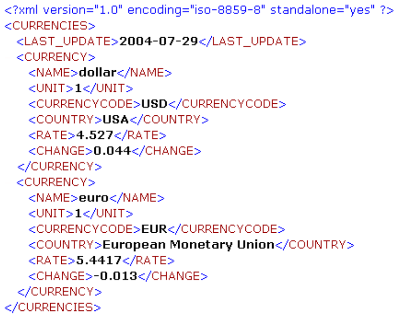
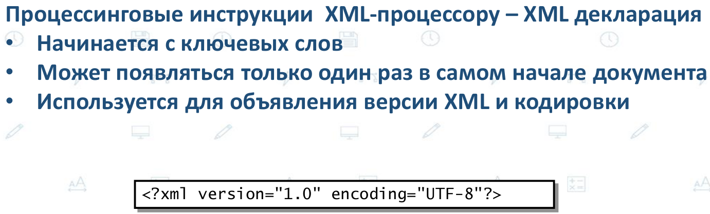
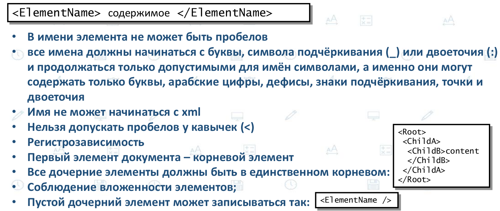
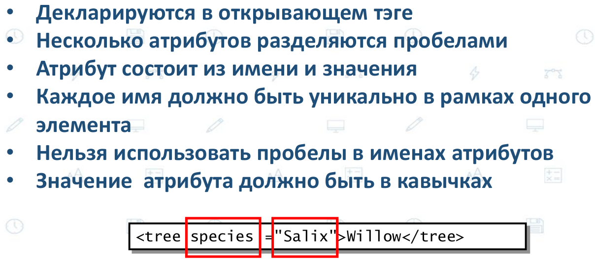
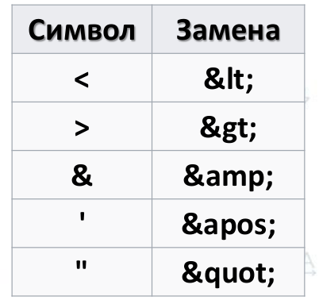
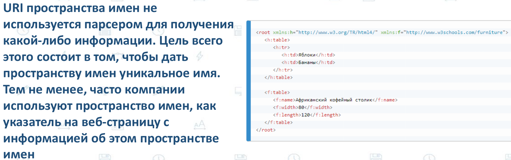
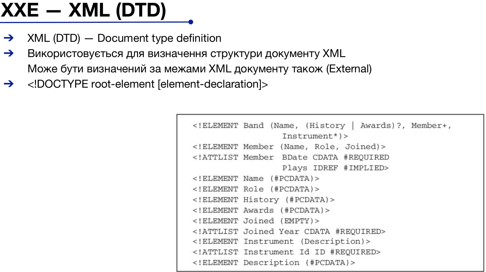
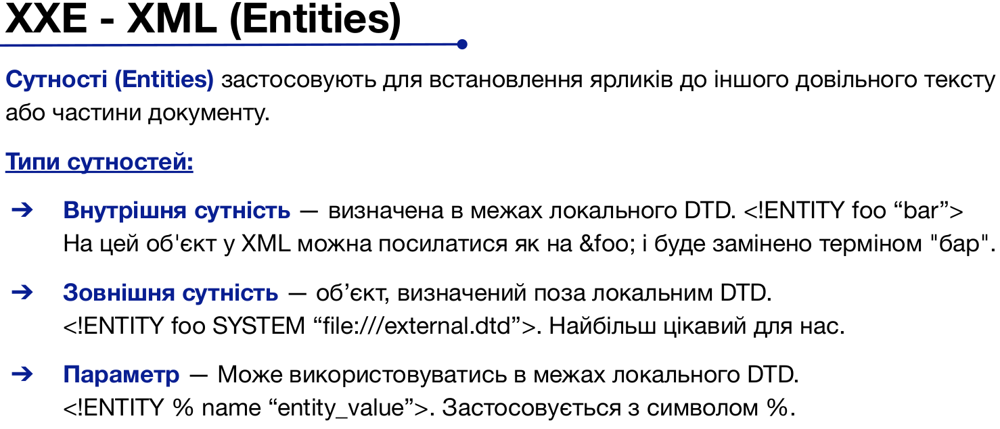
Сходство с HTML:
- В XML существуют открывающие, закрывающие и пустые тэги.
- Теги в документе могут быть вложены друг в друга.
- Теги начала и конца элемента являются основными используемыми в XML разметками.
- Тэги могут иметь любое количество атрибутов.
- Документы XML могут содержать ссылки на другие объекты.
В отличии от HTML большое внимание уделяется контролю документа.
- Синтаксическая проверка.
- Проверка валидности документа.
Существуют методы отображения XML данных, но если вы не определили способ визуализации XML документа, то в браузере он отобразится построчно, как обычный текстовый файл.
Один из методов отображения XML - указать CSS (чтобы использовать в документе нужно прописать инструкцию xml-stylesheet).
xml-stylesheet type="text/css" href="stylesheet.css"Есть также много других мощных методов отображения XML, например, XSLT (Extensible Stylesheet Language Transformations), который используется для преобразование XML в другие языки такие, как HTML.
xml-stylesheet type="text/xsl" href="transform.xsl"JSON (JavaScript Object Note) - Описание объектов JavaScript.
Простой формат обмена данными, удобный для чтения и написания как человеком, так и компьютером.
Произошёл от JavaScript, но используется с любым языком программирования.
- Не имеет тегов.
- Может содержать в значениях массивы и объекты.
- Ключи в JSON находятся с левой стороны от двоеточия - это любая строка, например 'key'.
- В каждом объекте ключи уникальные.
- Пробелы допускаются, но лучше их заменять знаком подчеркивания.
- Значения находятся с правой стороны от двоеточия.
- Типы значений: строка, число, объект, массив, булево, null
Apache
apache
Nginx
- Сервер в связке Nginx + NodeJs.
- Nginx будет отдавать статические файлы самостоятельно, динамический контент передавать из NodeJS.
- Установка и настройка Nginx.
- Представим что у вас чистый сервер и ничего не установлено.
Идем в папку /root и ставим Nginx:
apt-get install -y nginxПосле установки Nginx, в папке /var появилась папка /www, а в ней папка /html, а в ней файл index.html.
Идем в папку /var и переименуем папку /html в папку /nginx:
mv /var/www/html /var/www/nginxСоздаем доп.файл style.css (для теста):
touch /var/www/nginx/style.cssВ файле index.html пишем "Заглушка", этот файл будет заглушкой
В файле style.css пишем код:
body {
background: #000;
}
создать папку для NodeJS:
mkdir /var/www/nodejsДалее прописываем на всякий случай права для папок:
chown www-data /var/www && chown www-data /var/www/nginx && chown www-data /var/www/nodejsТеперь самое интересное, настраиваем файл конфига Nginx, редактируем файл default: mcedit /etc/nginx/sites-available/default
// Очищаем весь файл и пишем:
server {
default_server
// Nginx слушает порт 80, указан в /etc/nginx/nginx.conf
listen 80 default_server;
// Указываем "динамическую" папку NodeJS
root /var/www/nodejs;
// Указываем основной файл заглушки
index index.html;
}
Устанавливаем страницы ошибок.
В папке /var/www/errors должны быть файлы 50x.html и 40x.html.
error_page 500 502 503 504 /50x.html;
error_page 400 401 402 403 404 /40x.html;
location = /50x.html {
root /var/www/errors;
}
location = /40x.html {
root /var/www/errors;
}
Указываем IP адрес сервера server_name IP_адрес_сервера;
Если мы обращаемся по любому УРЛ начиная с /, то сервер будет обрабатывать NodeJS.
Тут указываем IP|Url и порт (8000) для NodeJS, поскольку Nginx будет висеть на 80 порту.
location / {
proxy_pass http://IPorURL_адрес_сервера:8000;
proxy_set_header Host $host;
}
Если мы обращаемся по УРЛ начинающийся с /nginx/, то мы будем подгружать "статичные" файлы хранящиеся в нем в соответствии с наличием этих файлов.
location /nginx/ {
// Указываем корень
root /var/www/;
autoindex off;
// Итого путь для Nginx будет
/var/www/static/
}
Добавляем Nginx в автозагрузку и запускаем, что бы изменения применились, после проверяем статус:
systemctl enable nginx && systemctl start nginx && systemctl status nginxУстановка и настройка NodeJS
Идем в папку /root и под пользователем root устанавливаем cURL
apt-get install -y curlС помощью cURL скачиваем NodeJS, в моем случае верся 6:
curl -sL https://deb.nodesource.com/setup_6.x -o nodesource_setup.shЗапускаем скаченный файл:
bash nodesource_setup.shУстанавливаем NodeJS
apt-get install -y nodejs build-essentialГотово! Можно протестировать:
node
console.log ('hello world')
Вместе с NodeJS установился и NPM (Node Package Manager), с помощью которого мы установим express и pm2:
С помощью демона pm2 можно позабыть о проблемах с падением NodeJS (устанавливаем глобально):
npm install pm2 -gИнициализируем проект, создаем package.json в который будем фиксировать нужные пакеты
npm initС помощью библиотеки express код будет писаться намного проще и быстрее (устанавлиаем локально):
cd /var/www/nodejs/
npm install express --save
Создаем файл server.js для NodeJS, который будет основным (входным) файлом: touch /var/www/nodejs/server.js
// настройки
const setup = {port:8000}
// подключить express
const express = require ('express');
// создать приложение
const app = express ();
// маршрутизировать GET-запрос http://ваш_сайт/test
app.get('/test', (req, res) => {res.send('Тест');});
// слушать порт и при запуске сервера показать порт
app.listen(setup.port, () => {console.log('Сервер: порт %s - старт!'});
Теперь можно добавить демону 1 процесс и запустить наш NodeJS сервер:
pm2 start /var/www/nodejs/server.jsПри этом у нас запущен сервер Nginx
После перезагрузки ОС, pm2 сам себя не запустит и соответственно не запустит процессы.
Выполняем команды:
pm2 start server.js
pm2 save
pm2 startup
- Сначала добавляем нужный процесс (в нашем случае скрипт NodeJS)
- Потом сохраняем конфигурацию
- После, добавляем PM2 в сервисы ОС
- Тестируем
| переходим на (http://IP_адрес_сайта:80/) | дожны увидеть фразу 'Тест'", |
| переходим на (http://IP_адрес_сайта:80/nginx/style.css) | дожны увидеть код стилей", |
| переходим на (http://IP_адрес_сайта:80/nginx/) | дожны увидеть заглушку" |